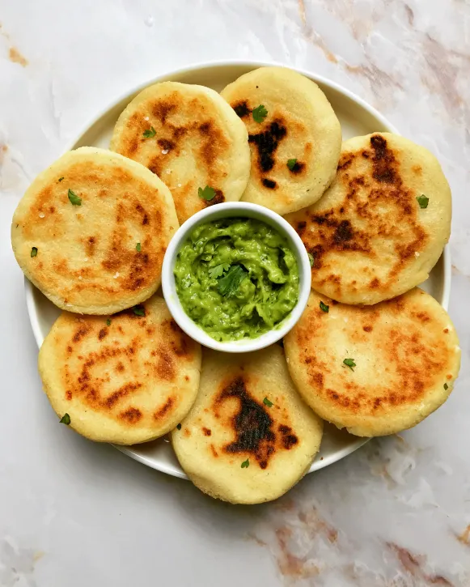

Colombian Arepas

Description
Arepas (pronounced ah-reh-pas) are round patties made from white cornmeal.
Colombian arepas can be made sweet or savory and are prepared over 75
different ways. Arepas are eaten for breakfast, as a snack, meal, or as a
side to accompany any dish. There are so many ways to eat them, and
preparations vary by region.
Ingredients
- 2 1/4 cups of water
- 2 cups of white pre-cooked cornmeal (I always use PAN)
- 1 cup of shredded cheese
- 4 tablespoons of butter (I use Earth Balance Vegan Butter)
- olive oil spray
- 1 teaspoon of salt
Steps
- Preheat a large non-stick pan to medium heat.
- Add the pre-cooked cornmeal flour into a large bowl.
- Heat the water and butter in the microwave for 2 minutes.
-
Add the water/butter mixture and salt to the pre-cooked cornmeal and mix
well with a spatula until there is no dry flour remaining.
-
Once the flour begins to absorb the water and the dough cools off, add
the vegan cheese and begin mixing with your hands. Mix until there is no
dry flour remaining. Note: once the dough is ready it should look (a
little softer than cookie dough.
-
Next, let’s make the arepa shapes. Take sections of the dough and roll
them into a ball. Then use the palm of your hands to press the ball
until it becomes a disc in between your palms. Rotate the arepa disc to
ensure all areas of the arepa are smooth and similar in depth (it should
be about ½ inch thick).
-
After you get your desired arepa shape, hold your arepa in one hand and
inspect the edges. Be sure to tap in any rough or dry edges (you want
the edges to be smooth like a circle).
-
Lightly grease the non-stick pan (I use olive oil spray) and then place
the arepas in the hot pan.
-
Let each side cook for 5-7 minutes until the arepa blackens and turns
crispy. NOTE: be sure to lightly butter the arepas between each flip to
prevent them from sticking to the pan.
- Yields 8-10 arepas.
- Serve the Colombian arepas with a meal, dip, or enjoy alone!